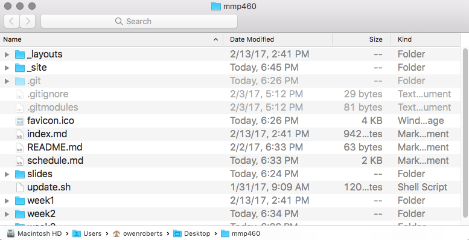

Git is a group of files that are hidden on your computer.
When you create a new Git repository, Git will create a .git folder, which is hidden by default. So you don't have to think about Git when you're looking at your project, but you know it's there. A set of files is referred to as a repo or repository.
| Command | Function | Examples |
|---|---|---|
| cd <path> | change directory | cd ~/Desktop cd ~/Desktop/my-project cd .. |
| ls <path> | list contents of directory | ls ls -l ls /Applications/ |
| mkdir | make a new directory | mkdir my-project |
| touch | create a file | touch index.html touch css/style.css |
| rm | remove a file note: file does not go to trash. it's gone forever. |
rm my-project/file.txt |
| cp <path> <path> | copy a file | cp ~/Desktop/my-project/css/style.css css/style.css |
| mv | move a file | cp ~/Downloads/file.txt my-project/file.txt |